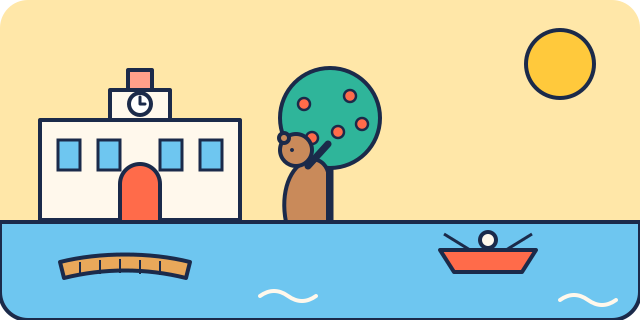

Lac de la Casa de Campo
Le grand parc forestier de Madrid, avec un lac et des barques à louer en saison. Parfait pour un pique-nique loin de la foule.


Ce que les enfants vont aimer
Un immense parc avec un lac et des canards.
Autour du lieu
Toilettes, tables à langer, aires de jeux, eau potable, pharmacie et station les plus proches, avec le temps de marche.
Aucun service recensé à proximité dans OpenStreetMap.
À combiner dans la journée
Madrid Río
De grandes aires de jeux le long de la rivière.
À 29 min à pied (1,1 km) · 0–14 ans
Temple de Debod
Un vrai temple d'Égypte au milieu de Madrid.
À 1,5 km, en transports · 4–14 ans
Marché de San Miguel
Un marché où l'on goûte plein de petites choses.
À 2,1 km, en transports · 2–14 ans
S'il pleut : le plan B couvert
Questions fréquentes
Lac de la Casa de Campo : à partir de quel âge ?
Nous le conseillons de 0 à 14 ans. Un immense parc avec un lac et des canards.
Lac de la Casa de Campo : combien de temps prévoir ?
Environ 1 h 30 sur place, sans compter le trajet.
Lac de la Casa de Campo : peut-on y aller avec une poussette ?
Facile en poussette.
Lac de la Casa de Campo : comment y aller ?
Paseo de la Puerta del Ángel, 28011 Madrid. Métro Lago (ligne 10).
Lac de la Casa de Campo : l'entrée est-elle gratuite ?
Oui, l'accès est libre.
Fiche vérifiée le 30 octobre 2026. Horaires, tarifs et conditions d'accès changent souvent : vérifiez toujours sur le site officiel avant de partir. Tous les lieux de Madrid avec des enfants.